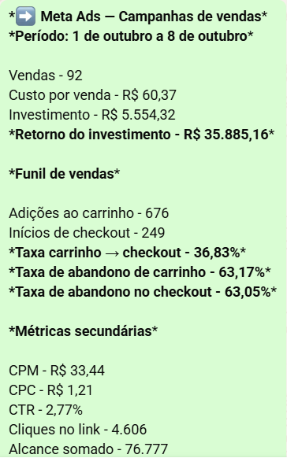
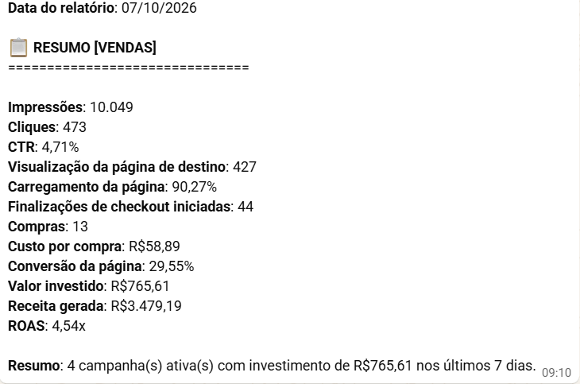
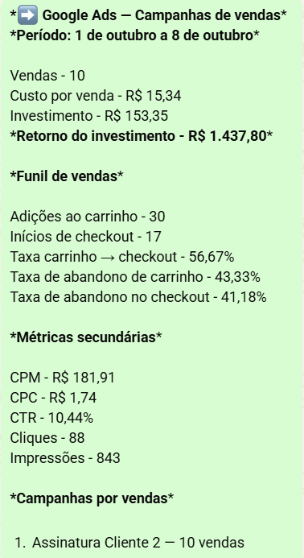
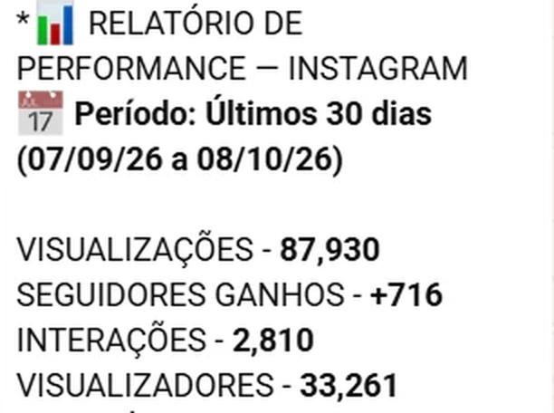

Para quem esse treinamento é recomendado…
✅ Perfil 1: Prestador de serviço que já fatura acima de R$5 mil por mês, mas não sabe de onde virão os próximos clientes.
✅ Perfil 2: Quem depende de indicações, já testou estratégias que não deram certo e quer ter controle do próprio crescimento.
✅ Perfil 3: Quem quer vender mais e aproveitar melhor os leads, sem montar uma operação comercial caótica.
Não é para: ❌ Quem ainda não tem um negócio funcionando. [NÃO É PARA VOCÊ]
Imagine adicionar R$10 mil ou mais em receita recorrente nos próximos 90 dias, sem depender de indicações e sem contratar uma equipe comercial.
A conta é simples: 5 clientes × R$2.000 por mês = R$10.000 de receita recorrente. Não precisa de centenas de clientes.
O problema quase nunca é gerar contatos. É transformar oportunidades em vendas. Por isso, vou te mostrar o Método Cliente Previsível™, em 4 pilares conectados:
✅ 1. Posicionamento e Oferta: quem é seu cliente ideal e por que ele deve te escolher.
✅ 2. Aquisição de Clientes: um canal mensurável para atrair interessados qualificados.
✅ 3. Conversão Comercial: atendimento, proposta e follow-up para fechar mais vendas.
✅ 4. Automação e Escala: rotinas automáticas e indicadores para melhorar o sistema.
Resultados reais da Genius Assessoria Digital:
✅ Meta Ads: 92 vendas em 8 dias, com R$5.554,32 investidos.

✅ Campanha de vendas: ROAS de 4,54x, com 13 compras e R$3.479,19 de receita reportada.

✅ Google Ads: 10 vendas em 8 dias, com R$153,35 investidos.

✅ Instagram: 87.930 visualizações e 716 novos seguidores em 30 dias.

Resultados de operações reais da Genius, não de alunos do método. Receita não é lucro, e os números não garantem resultado futuro.
Quer saber se isso funciona para o seu negócio? Toque no botão abaixo e converse direto comigo. Vamos entender de onde vêm seus clientes, onde estão os gargalos e se faz sentido implementar o método na sua operação.
FALAR COMIGO NO WHATSAPP